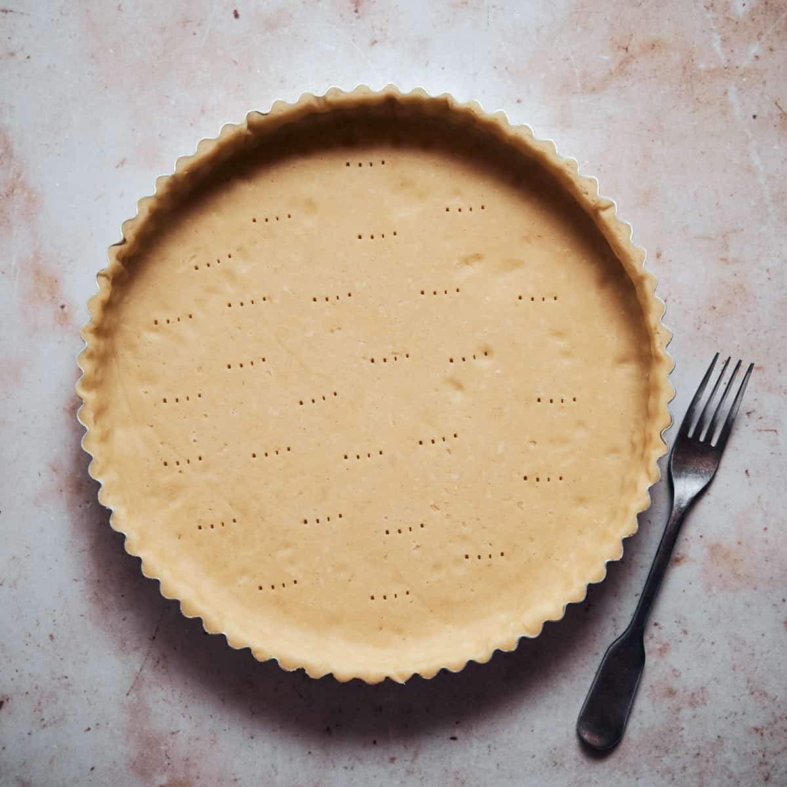

SABLÉE CRUST

Description
The perfect crust to use with any tart. It's buttery and not overly sweet, so it won't interfere with the taste of any fillings you may want to put it. On the conrary, it will add richness to each bite due to its distinctive melt-in-the-mouth quality.
Ingredients
- 90g icing sugar
- 230g all-purpose flour
- 30g almond flour
- 110g unsalted butter
- 50g egg
- pinch of salt
Steps
- Measure and cut the butter into chunks and place it into the freezer for a few minutes
- Sif together dry ingredients: flour, icing sugar, almond and salt
- Add very cold butter chunks into the dry ingredients, and rub the mixture between your ahnds until it becomes a sand-like consistency
- Add egg intot he mixture and mix with your hands just until the dogh comes together
- Knead the dough with the plam of your hand for a minute or two, just until the dough becomes smooth.Do not over-knead the dough and do not use mixer, neither a food processor
- if the dough is too warm and sticky, place it into the fridge for 10-15 minutes first. Otherwise, continue with rolling the dough out into 2mm thickness between two silicone baking mats
- Place the dough into the freezer for º5 min in between the two silicione baking mats. Do not remove the mat at this point
- Prepare your oven rack with the perforated air baking mat and perforated tart rings on top
- Take the dough out from the freezer, remove the top of the silicone mat and using one of the perforated tart rings, cut out 8 circles — this will be the bottom of your tart. Carefully move the dough circles with the help of the offset spatula and place them into the rings one by one
- If at any point the dough gets too warm to work with, pop it back into the freezer for 5 minutes. You might need to take the dough in and out of the freezer many times depending on the temperature of your kitchen. It is extremely important to work with a dough which is cold enough to be able to handle (so not quickly) but not too cold which would result in breaking it
- Cut 8 long strips out of the dough, this willbe the side of the tart
- Carefully place the strips into the ring one by one. Press each strip onto the ring so it sticks to it
- Place the perforated tart ring with the pastry dough in them into the freezer for 1 hour
- Pre-heat the oven to 160C
- After 1 hour, trim the top the pastry with a sharp knife
- Bake for 20 min, then carefully remove the rings and bake for another 5-10 min until golden brown. At the 20 min mark, the pastry should be already somewhat baked and therefore will contract with the ring. If the pastry feels stuck into the ring, bake it for further 1-2 minutes
- Let the pastry cases cool onto the perforated air baking mat before filling